Fit
Who the offer is for, which scope it suits, and when a different route may be better.
Plans / 01
Plans opens as a clear telecommunications decision hub: what Signal offers, who it helps, why it matters, and which route to take first.
The first screen combines positioning, proof, primary action, and fast internal navigation, so people can act immediately or compare the rest of the plans route with context.
Black full-bleed coverage hero
Select the closest route and Signal keeps the next step, proof, and follow-up expectation aligned with availability and reliability.
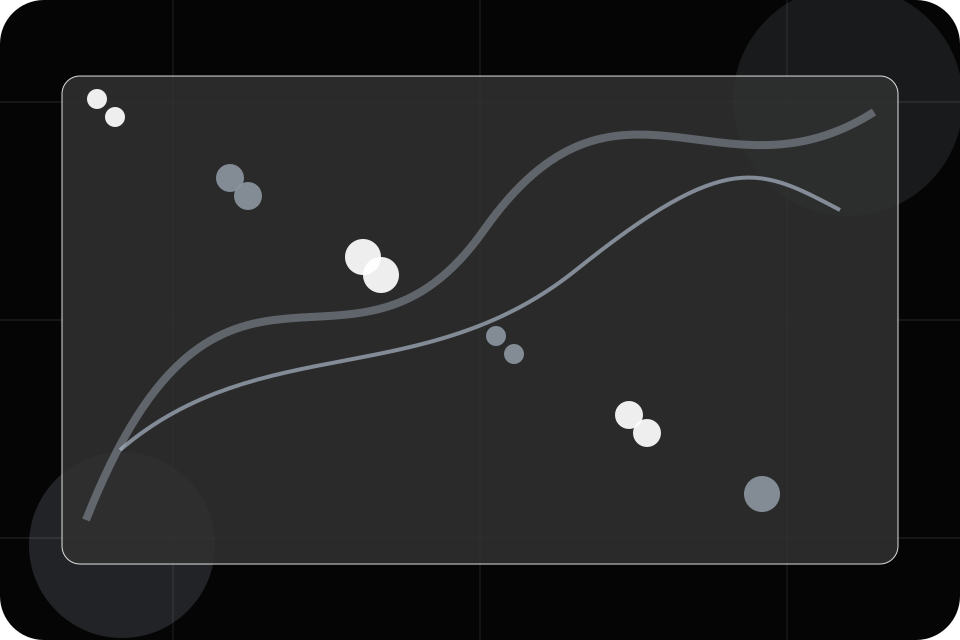
Plans / 02
Residential makes commercial comparison easier by showing fit, scope, and terms before telecommunications visitors ask for the next step.
The layout keeps price-sensitive decisions honest: it separates starting scope, fuller delivery, and ongoing support so the visitor can ask a sharper question.
Explore Plans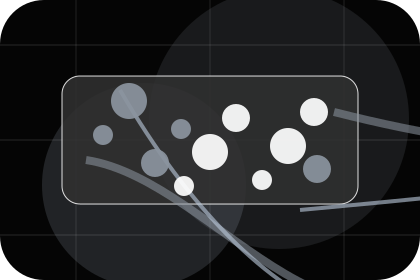
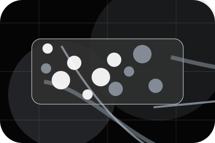
Who the offer is for, which scope it suits, and when a different route may be better.
Plans / 03
Business makes commercial comparison easier by showing fit, scope, and terms before telecommunications visitors ask for the next step.
The layout keeps price-sensitive decisions honest: it separates starting scope, fuller delivery, and ongoing support so the visitor can ask a sharper question.
Explore PlansWho the offer is for, which scope it suits, and when a different route may be better.
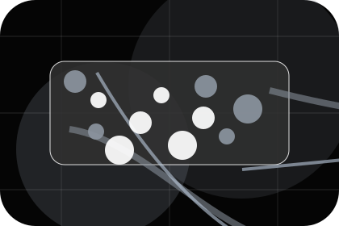
What is included clearly enough for telecommunications, internet & connectivity visitors to compare value without hidden jargon.
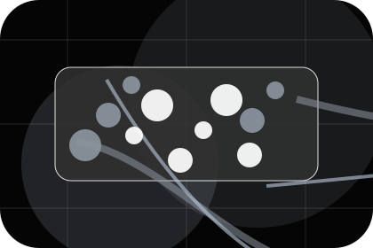
The practical details that should be confirmed before someone asks to check coverage.
Plans / 04
Enterprise makes commercial comparison easier by showing fit, scope, and terms before telecommunications visitors ask for the next step.
The layout keeps price-sensitive decisions honest: it separates starting scope, fuller delivery, and ongoing support so the visitor can ask a sharper question.
Explore PlansWho the offer is for, which scope it suits, and when a different route may be better.
What is included clearly enough for telecommunications, internet & connectivity visitors to compare value without hidden jargon.
The practical details that should be confirmed before someone asks to check coverage.
Plans / 05
Speeds shows what changes after the work: clearer decisions, visible progress, and proof points that connect the offer to real outcomes.
The layout connects before-and-after thinking with measured outcomes, making the result easy to scan without promising what the business cannot guarantee.
Explore PlansThe uncertainty, delay, or missed opportunity visitors bring into speeds.
The clearer, safer, or more valuable state Signal is designed to support.
The visible cue that connects speeds to a believable decision, not a loose claim.
Plans / 06
Routers makes commercial comparison easier by showing fit, scope, and terms before telecommunications visitors ask for the next step.
The layout keeps price-sensitive decisions honest: it separates starting scope, fuller delivery, and ongoing support so the visitor can ask a sharper question.
Explore PlansWho the offer is for, which scope it suits, and when a different route may be better.
What is included clearly enough for telecommunications, internet & connectivity visitors to compare value without hidden jargon.
The practical details that should be confirmed before someone asks to check coverage.
Plans / 07
Contracts makes commercial comparison easier by showing fit, scope, and terms before telecommunications visitors ask for the next step.
The layout keeps price-sensitive decisions honest: it separates starting scope, fuller delivery, and ongoing support so the visitor can ask a sharper question.
Explore Plans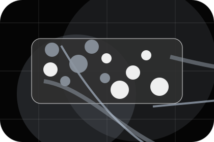
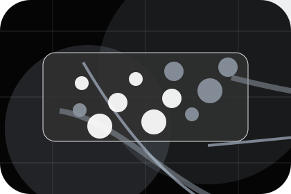
Who the offer is for, which scope it suits, and when a different route may be better.
Plans / 08
Comparison makes commercial comparison easier by showing fit, scope, and terms before telecommunications visitors ask for the next step.
The layout keeps price-sensitive decisions honest: it separates starting scope, fuller delivery, and ongoing support so the visitor can ask a sharper question.
Explore PlansWho the offer is for, which scope it suits, and when a different route may be better.
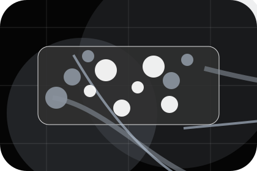
What is included clearly enough for telecommunications, internet & connectivity visitors to compare value without hidden jargon.
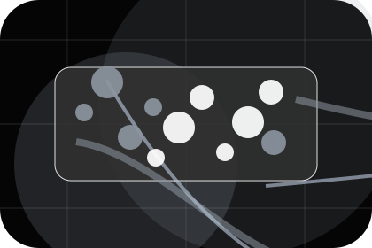
The practical details that should be confirmed before someone asks to check coverage.
Plans / 09
Details makes commercial comparison easier by showing fit, scope, and terms before telecommunications visitors ask for the next step.
The layout keeps price-sensitive decisions honest: it separates starting scope, fuller delivery, and ongoing support so the visitor can ask a sharper question.
Explore PlansWho the offer is for, which scope it suits, and when a different route may be better.
What is included clearly enough for telecommunications, internet & connectivity visitors to compare value without hidden jargon.
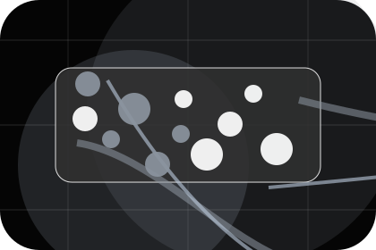
The practical details that should be confirmed before someone asks to check coverage.
Plans / 10
Signal closes the plans route with a clear action, a quick reminder of the value, and a low-friction way to check coverage.
Visitors who are ready can use the primary action. Visitors who are still comparing can scan the section links, proof, and support routes before they check coverage.
Check CoverageThe final block keeps the choice simple: act now, compare one more proof route, or send enough detail for a focused response.
Check Coverageavailability and reliability
A coverage-first telecom site with stark dark hero, satellite-map panels, speed proof, and direct address checking. Plans ends with a direct path to check coverage, plus enough context for visitors who still need to compare.
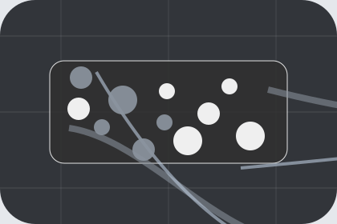
Check CoverageInformation is provided for planning and should be reviewed for the final client, location, and operating rules.